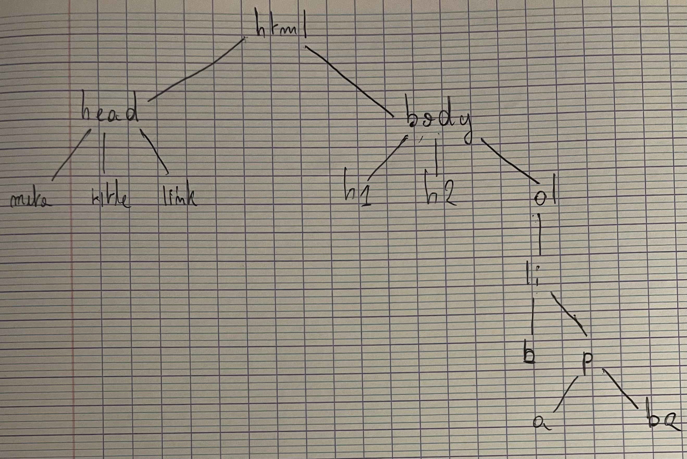

| Yassine HAMROUNI | |
| ESIPE INFO 1 | |
| TP 1 de Programmation Web |
Tout s'affiche correctement dans Firefox. Cependant cela peut-etre different d'un moteur de recherche à un autre.
Par consequent on metterait cela dans la balise head:
<meta charset="UTF-8">
Elles servent a ecrire des titres dans une page html, plus le nombre est eleve, plus la taille de la policie est reduite.
taille de police de h1 > taille de police de h2 > taille de police de h3.
Il sert a ecrire un paragraphe.
Les tags HTML commencent par une balise ouvrante <foo>et finissent
par une balise fermante </foo>
Pour mettre en gras, il suffit d'utiliser la balise <b>exemple</b>. Ce qui donne: exemple
Pour l'italique, on utilise la balise i <i>exemple</i>. Ce qui donne: exemple
On utilise dans un premier temps la balise b et a l'interieur de cette balise on y met la balise i. Ou l'inverse:
<b><i>txt</i></b> ou <i><b>txt </b> </i>
Ce qui donne exactement la meme chose:
Exemple ou Exemple
Il suffit d'ajouter dans la balise head:
<title>Compte Rendu de TP1</title>

Le nom de la machine est mongo
Le nom de domaine est univ-mlv.fr.
Reponse à la requête:
monge.univ-mlv.fr has address 193.55.61.150
monge.univ-mlv.fr mail is handled by 10 monge.univ-mlv.fr.
La premiere ligne correspond a l'adresse IPV4 du nom de domaine: monge.univ-mlv.fr.
La deuxieme ligne correspond au serveur de messagerie du nom de domaine.
Elle indique egalement la priorite. A savoir que plus le nombre est faible, plus le serveur de messagerie a la priorite.
Cela est renvoie vers ce site igm.univ-gustave-eiffel.fr
Les noms de domaine sont souvent plus faciles à mémoriser pour les êtres humains que les adresses IP.
Etant donné que la machine hébergent plusieurs adresses IP, on ne peut pas accéder directement à l'une d'entre-elles.
La commande traceroute est utilisée pour suivre le chemin qu'un paquet prend à travers le réseau pour atteindre une destination spécifique.
Le nom du premier routeur est gwetud.
Le réseau sur lequel est connecté l'université est u-pem.fr.
Voici les nom de domaines ainsi que les adresses des routeurs suivant:
195.220.83.114 (195.220.83.114)
vl1488-te0-1-0-2-ren-nr-marne-rtr-091.noc.renater.fr (193.55.200.168)
te0-1-0-3-ren-nr-creteil-rtr-091.noc.renater.fr (193.51.177.96)
renater-ias-geant-gw.par.fr.geant.net (83.97.89.9)
ae2.mx1.lon.uk.geant.net (62.40.98.64)
On y trouve des informations sur les services réseaux associés à des ports,
notamment les noms de service et les numéros de port associés.